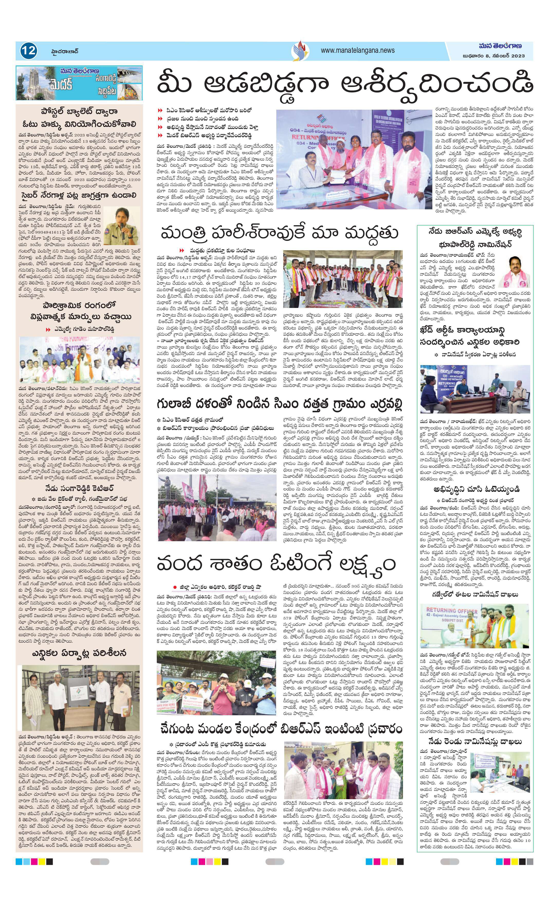

REPLICA
Visually Faithful Document Reconstruction
Aryan Jain2, Sahithi Kukkala2, Ravi Kiran Sarvadevabhatla1,2
The medium is the argument
Nothing here is a screenshot
Every reconstructed document in this deck is live DOM — real tags, real inline CSS, selectable text. You are seeing our actual output rendered, not a picture of it.
The figures still work
The interactive figures from our project page are embedded live — the same code, not exported stills. I can click, hover and step through them mid-talk.
results tables · qualitative · applications
You can read the source
Press V at any time and the deck shows you the HTML of the slide you are currently looking at.
The problem
OCR gets the words right…

Rebuilding a document, one layer at a time
Bill to: Northwind Traders, Attn: A. Vance, 88 Kingsway, Chicago, IL. Invoice date May 12, 2024. Terms Net 15. Status Overdue.
| Item | Qty | Unit | Total |
|---|---|---|---|
| Consulting Services | 10 | $150.00 | $1,500.00 |
| Software License (Annual) | 1 | $2,400.00 | $2,400.00 |
| Support Retainer | 3 | $800.00 | $2,400.00 |
Subtotal $3,900.00. Tax (8%) $312.00. TOTAL DUE $4,212.00
Remittance. Payment may be made by bank transfer to the account on file, quoting the invoice number above as the reference. Cheques should be made payable to Meridian & Co. and posted to the Boston address.
Queries. Any discrepancy must be raised in writing within seven days of receipt. Credited or cancelled line items remain on the statement for audit purposes and are struck through rather than removed.
Four axes — and prior work covers the first two
Text Extraction
Are the words right?
Characters and words, at block and page level.
Logical Structure
Is the hierarchy right?
Reading order, nesting, tables, lists, formulas.
Physical Structure
Is the position right?
Absolute placement of blocks and lines on the page.
Visual Fidelity
Does it look right?
Typography, colour, weight, spacing, backgrounds.
Everyone recovers text. Nobody recovers the page. — paper Fig. 1, live & interactive
The baselines are lopsided. — paper Fig. 1B, live
FID-HTML
Generic HTML permits fidelity. FID-HTML guarantees it. — paper Table 1, live
Six dimensions — click one to see where it lives in the source — paper Fig. 3, live
Why agentic?
Agents reason. Tools execute.
Fixed function, fixed input → fixed output. No judgment.
A layout detector always returns boxes the same way. It cannot notice that it merged two columns, or that the "table" it found is really a form.
reading order · font fitting · background restoration
Decides which tool, when — and whether the result is good enough.
Then retries, overrides an upstream label, reroutes to a different specialist, or injects a correction. It is allowed to disagree with what it was given.
specialist generation · reading order · reflection
Four places the system exercises judgment
Labeling agent — disagrees with the detector
Set-of-Mark prompting lets it reason jointly over spatial grounding and textual content, so it identifies mis-segmented regions, mixed-content blocks and ambiguous proposals instead of accepting them.
Grouping agent — recovers relationships
Builds a directed layout graph from containment, reading order and semantic compatibility — resolving caption–figure binding, list nesting and footnote attachment that geometry alone cannot.
Router agent — overrides its own input
If the crop contradicts its predicted type — an equation labelled as text — it overrides the upstream label and reroutes to the correct specialist, stopping the error from cascading into generation.
Reflection agent — looks at the result
Renders the HTML, compares it against the source image, and injects targeted CSS corrections until alignment stabilises. The only component that sees the final render.
Four questions → four stages
Segment
"How to divide the document into meaningful components?"
Hierarchical semantic layout detection → a layout tree.
Localize
"How to convert each component into equivalent HTML?"
Router + specialist agents → styled sub-HTML per node.
Assemble
"How to assemble components into a coherent structure?"
Position-aware merge + semantic reading order.
Refine
"How to refine structure for visual and structural fidelity?"
Font, background, and closed-loop visual reflection.
REPLICA end-to-end — paper Fig. 4

Segment — hierarchical semantic layout detection

Localize — layout-aware HTML generation
<h2 class="title_2" style="position: absolute; left: 232px; top: 99px; width: 660px; height: 59px; font-size: 18px; font-weight: 700; color: rgb(20,20,20);"> CSIR — INSTITUTE OF MINERALS & MATERIALS TECHNOLOGY </h2>
Assemble, then Refine against the render
Assemble
Position-aware merge (tool). Bottom-up over Tlayout, preserving containment, nesting and spatial alignment → a structurally valid document.
Reading-order agent. Spatial heuristics fail on multi-column pages and floats; the agent evaluates textual continuity and contextual coherence across nodes instead.
Refine — the closed loop
- Tfont maximal non-overflow font scales by bounded search.
- Tbg page-level colours, shading and overlays restored by CSS layering.
- Aref closed-loop comparison of R(H) against I — catches overlaps, wrapping and misalignment that only exist after rendering, injecting targeted CSS (e.g. shape-outside) for up to 5 iterations.
The pipeline, running on a real page — live, steps with the clicker
Evaluation
VFDR-Bench — and two new axes to score
in FID-HTML
Established axes
Introduced in this paper
Everyone passes text. The field collapses on position. — paper Table 2, live & complete
Two jumps carry the design — paper Table 3, live & complete
Agent & tool reliability — paper Table 4, live
Source scan vs live FID-HTML render

What FID-HTML unlocks — paper Fig. 2, live · hover to zoom
Where REPLICA still falls short
Single-page only
No multi-page consistency yet — structures spanning a page break (continued tables, figures) can fragment.
Font identification
Bold, italic, underline and colour are recovered reliably; exact font families are not. Existing methods cover mostly English/Chinese — large-scale multilingual font recognition remains open.
Rendering cost
The refine loop renders in a browser repeatedly — real latency versus a single forward pass.
Represent → Measure → Generate
FID-HTML
A web-native format where position and style are required, inline, per element — fidelity by construction.
VFDR-Bench + GPS · LPS · VFS
5,000 expert-annotated documents, 15+ languages — the first benchmark to score layout and rendered appearance.
REPLICA
Segment → Localize → Assemble → Refine. Agents where judgment is needed, tools where determinism is.
at 3.75× smaller